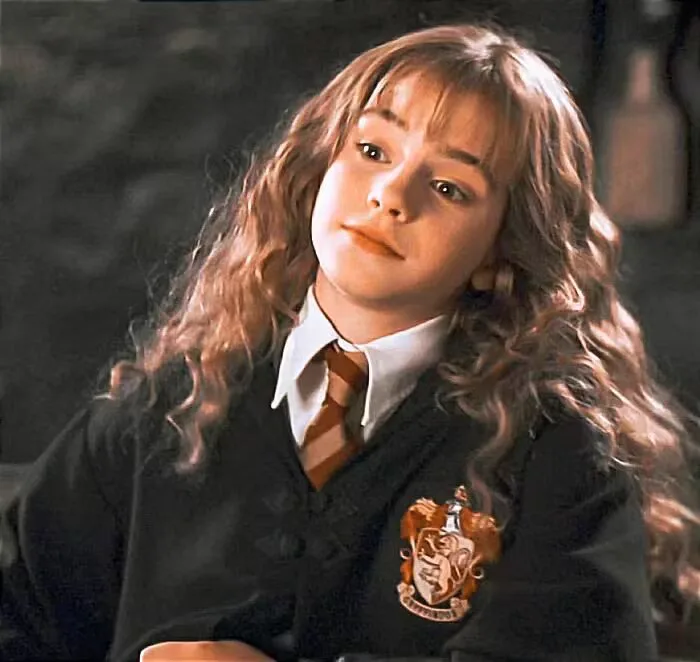
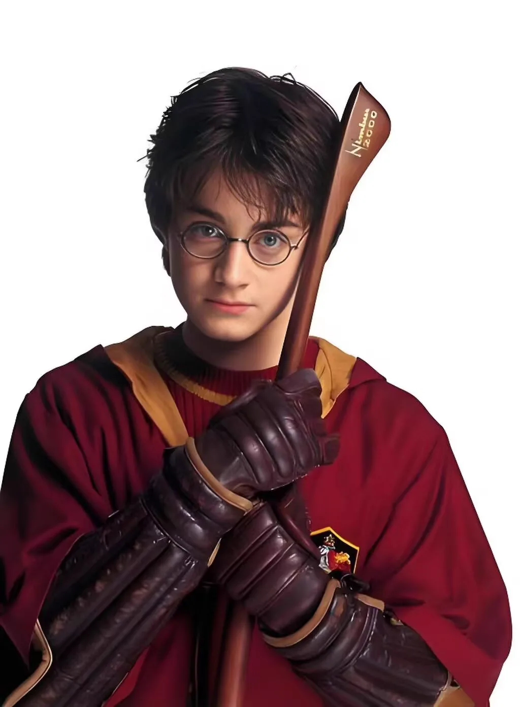
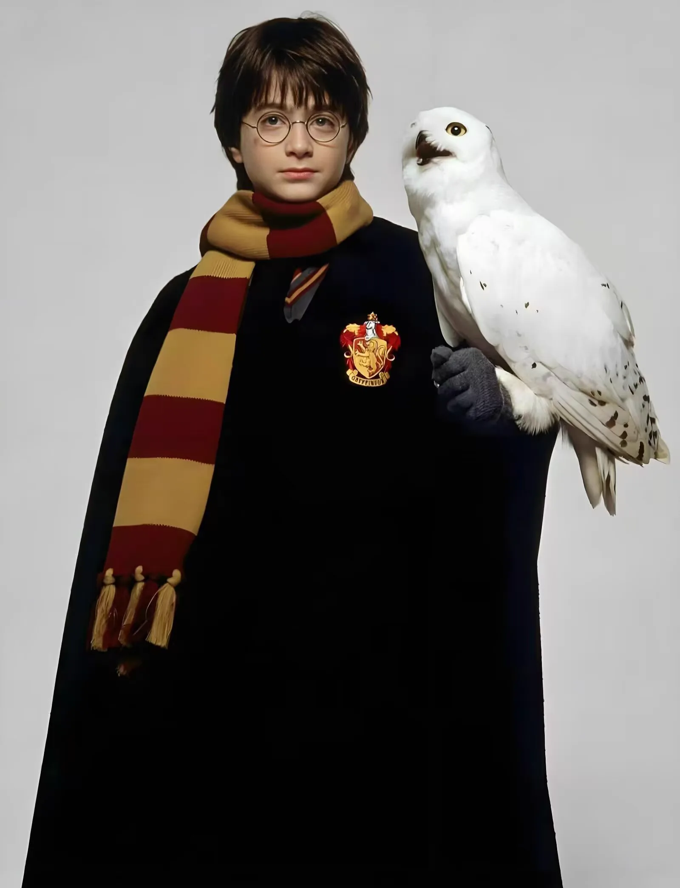
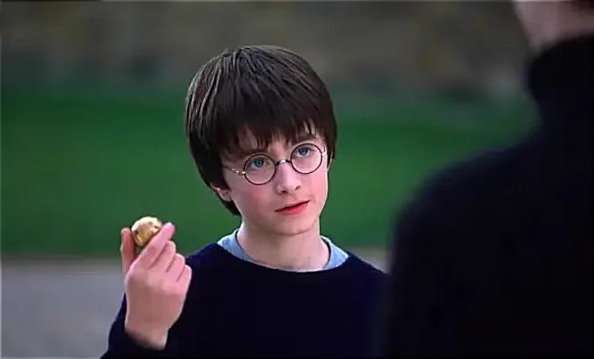
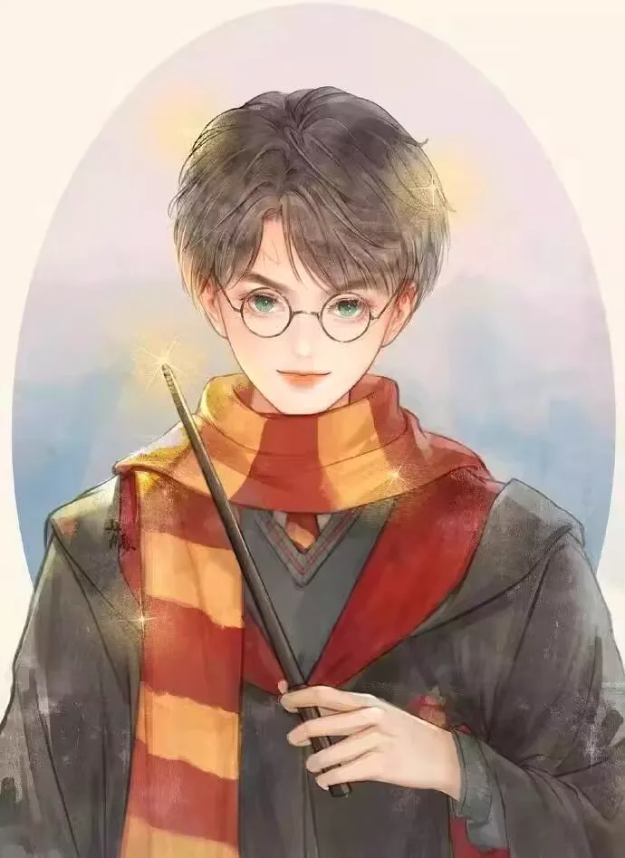
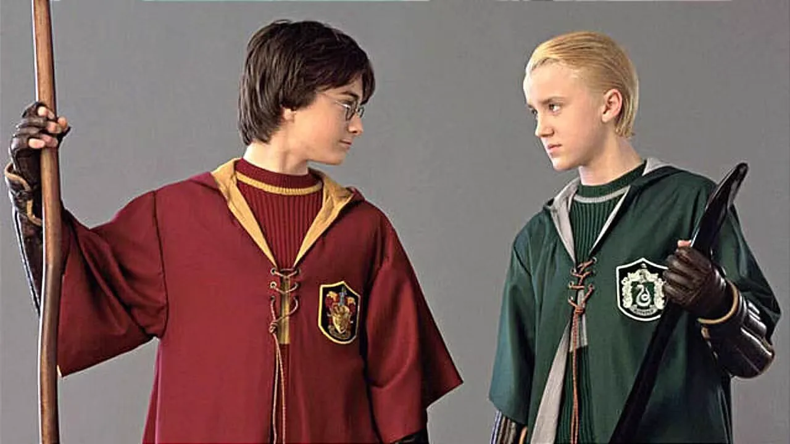
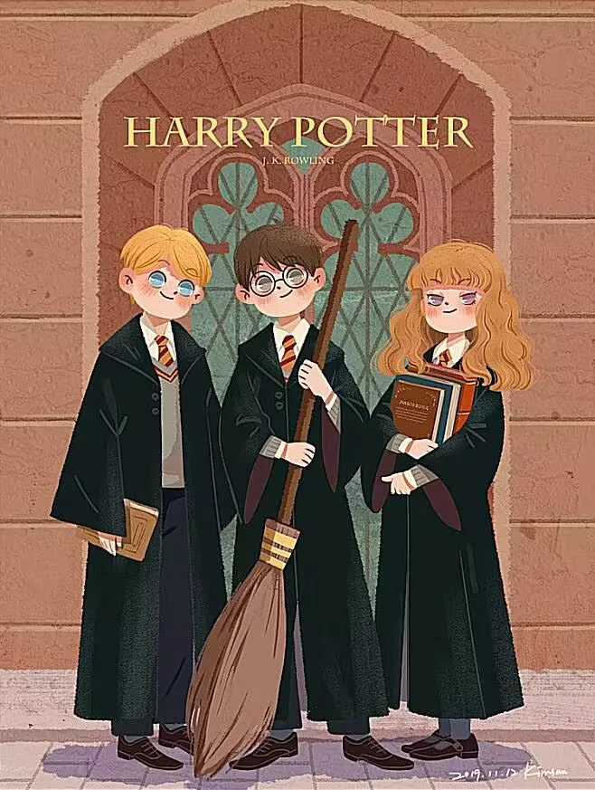

Journal · 2024-11-18
湖北省武汉市
2024年11月18日 20:26
世间绮丽之最，在于把自己过成自己喜欢的样子。 纵使短暂，也很精彩！
管管小王纸 ：添加时光轴记录：降温啦，大家注意添衣保暖
新的一周，小王纸带来了一部充满魔法与奇迹的电影
【影视推荐】
《哈利波特与魔法石》
《哈利波特与魔法石》讲述了孤儿哈利在11岁时收到霍格沃茨魔法学校的录取通知书，从此踏上了一段奇妙旅程。在这里，他结识了罗恩和赫敏，三人一起保护能复活邪恶巫师伏地魔的魔法石。电影中，哈利从孤独的小男孩成长为勇敢的巫师，展现了成长过程中的心理变化。
这部电影不仅是奇幻故事，更深刻地挖掘了成长之路上的心理变迁与内心世界的丰富层次：从初踏入霍格沃茨时对未知世界既兴奋又恐惧的心情，哈利逐渐学会了如何勇敢地面对那些看似不可战胜的黑暗与邪恶。他从一个对魔法世界充满好奇却又略带胆怯的小男孩，成长为一个敢于深入禁林、直面心魔、保护朋友与正义的勇敢巫师。这一路上，哈利经历了从对自我价值的深深疑惑，到在朋友的支持与自我挑战中逐渐找到并坚定信念的心路历程。他学会了，真正的力量不在于魔法的强弱，而在于内心的勇气、对朋友的忠诚以及对爱的无畏付出。
每个人心中都有一块属于自己的“魔法石”，它不仅仅是外在力量的象征，更是内在品质的凝聚——那是面对困难时不屈不挠的勇气，是对家人、朋友间无条件的爱，以及在一次次挑战中逐渐形成的自我认同与自我价值的实现。这块“魔法石”照亮了我们前行的道路，让我们在人生的旅途中，即使遭遇挫折与困惑，也能找到方向，坚持自我，勇敢地去追寻梦想与真理。
正如哈利在故事中不断发现与强化自己的内在力量，我们也应在学习、工作与生活的每一个阶段，勇敢地探索未知，拥抱变化，用爱、勇气与智慧，去点亮心中的“魔法石”，在有限的光阴里享受师友的温情，收获极致的喜悦。
世间绮丽之最，在于把自己过成自己喜欢的样子。
纵使短暂，也很精彩！







Nov 18, 2024 20:26
The most beautiful thing in this world is living your life the way you love. Even if it's brief, it's still wonderful!
管管小王纸 ：Added a timeline entry: It's getting colder, everyone remember to dress warmly!
This new week, Xiao Wangzhi brings you a movie full of magic and wonder.
[Movie Recommendation]
“Harry Potter and the Sorcerer's Stone”
“Harry Potter and the Sorcerer's Stone” tells the story of Harry, an orphan who receives his acceptance letter from Hogwarts School of Witchcraft and Wizardry at age 11, embarking on a wondrous journey. There, he befriends Ron and Hermione, and the three work together to protect the Sorcerer's Stone, which can bring the evil wizard Voldemort back to life. In the film, Harry grows from a lonely little boy into a brave wizard, revealing the psychological changes along the way.
This film is not just a fantasy tale; it delves deeper into the psychological transformation on the road to growing up and the rich layers of the inner world: from the mixed excitement and fear he feels upon first setting foot in Hogwarts, Harry gradually learns to face the seemingly invincible darkness and evil with courage. He grows from a little boy full of curiosity yet a touch of timidity toward the magical world into a brave wizard who dares to venture into the Forbidden Forest, confront his inner demons, and protect his friends and justice. Along the way, Harry experiences a journey from deep doubt about his self-worth to gradually finding and firming up his beliefs through his friends' support and his own challenges. He learns that true strength lies not in the power of magic, but in the courage of the heart, loyalty to his friends, and fearless devotion to love.
Everyone has their own “Sorcerer's Stone” in their heart. It is not merely a symbol of external power, but the crystallization of inner qualities—the unyielding courage in the face of difficulties, the unconditional love for family and friends, and the realization of self-identity and self-worth gradually formed through one challenge after another. This “Sorcerer's Stone” lights our path forward, so that on the journey of life, even when we encounter setbacks and confusion, we can still find our direction, stay true to ourselves, and bravely pursue our dreams and the truth.
Just as Harry continually discovers and strengthens his inner power in the story, we too should, at every stage of study, work, and life, bravely explore the unknown, embrace change, and use love, courage, and wisdom to light up the “Sorcerer's Stone” in our hearts, savoring the warmth of teachers and friends in our finite time and reaping the ultimate joy.
The most beautiful thing in this world is living your life the way you love.
Even if it's brief, it's still wonderful!
18 nov. 2024 20:26
La plus belle chose au monde est de vivre en devenant la personne que l'on aime être. Même si c'est éphémère, c'est magnifique !
管管小王纸 ：Ajout d'une entrée de chronologie : Il fait plus froid, couvrez-vous bien !
Pour cette nouvelle semaine, Xiao Wangzhi vous propose un film plein de magie et de merveilles.
[Recommandation de film]
« Harry Potter à l'école des sorciers »
« Harry Potter à l'école des sorciers » raconte comment Harry, un orphelin, reçoit à 11 ans sa lettre d'admission à l'école de sorcellerie de Poudlard et se lance dans un voyage merveilleux. Il y rencontre Ron et Hermione, et tous trois protègent ensemble la pierre philosophale capable de ressusciter le sorcier maléfique Voldemort. Dans le film, Harry passe du petit garçon solitaire au sorcier courageux, montrant les évolutions psychologiques de cette croissance.
Ce film n'est pas qu'un récit fantastique ; il explore plus profondément les évolutions psychologiques du chemin de la croissance et la richesse des strates du monde intérieur : depuis le mélange d'excitation et de peur face à l'inconnu en arrivant à Poudlard, Harry apprend peu à peu à affronter avec courage les ténèbres et le mal qui semblent invincibles. Il grandit, passant d'un petit garçon curieux mais un peu craintif face au monde magique à un sorcier courageux qui ose s'aventurer dans la forêt interdite, affronter ses démons intérieurs et protéger ses amis et la justice. Tout au long de ce chemin, Harry traverse un parcours intérieur, du profond doute sur sa propre valeur à la découverte progressive, grâce au soutien de ses amis et à ses propres défis, d'une conviction ferme. Il apprend que la vraie force ne réside pas dans la puissance de la magie, mais dans le courage du cœur, la loyauté envers ses amis et un dévouement sans peur à l'amour.
Chacun porte en son cœur sa propre « pierre philosophale ». Elle n'est pas seulement le symbole d'une force extérieure, mais la condensation de qualités intérieures — le courage indomptable face aux difficultés, l'amour inconditionnel envers la famille et les amis, ainsi que la réalisation de l'identité et de la valeur de soi qui se forge au fil des épreuves. Cette « pierre philosophale » éclaire notre chemin, afin qu'au cours du voyage de la vie, même face aux revers et aux doutes, nous puissions trouver notre direction, rester fidèles à nous-mêmes et poursuivre courageusement nos rêves et la vérité.
Tout comme Harry découvre et renforce sans cesse sa force intérieure dans l'histoire, nous devrions nous aussi, à chaque étape de nos études, de notre travail et de notre vie, explorer courageusement l'inconnu, embrasser le changement et, avec amour, courage et sagesse, allumer la « pierre philosophale » de notre cœur, pour savourer la chaleur des maîtres et des amis dans le temps qui nous est compté et récolter la joie ultime.
La plus belle chose au monde est de vivre en devenant la personne que l'on aime être.
Même si c'est éphémère, c'est magnifique !
18.11.2024 20:26
Das Schönste auf der Welt ist, sein Leben so zu leben, wie man es selbst liebt. Selbst wenn es nur kurz währt, ist es wunderbar!
管管小王纸 ：Zeitachsen-Eintrag hinzugefügt: Es wird kälter, zieht euch alle warm an!
In der neuen Woche bringt euch Xiao Wangzhi einen Film voller Magie und Wunder.
[Filmempfehlung]
„Harry Potter und der Stein der Weisen“
„Harry Potter und der Stein der Weisen“ erzählt die Geschichte des Waisen Harry, der mit elf Jahren seinen Aufnahmebrief für die Hogwarts-Schule für Hexerei und Zauberei erhält und sich auf eine wundersame Reise begibt. Dort freundet er sich mit Ron und Hermine an, und die drei schützen gemeinsam den Stein der Weisen, der den bösen Zauberer Voldemort wiederbeleben könnte. Im Film wächst Harry vom einsamen kleinen Jungen zum mutigen Zauberer heran und zeigt dabei die psychischen Veränderungen dieses Heranwachsens.
Dieser Film ist nicht nur eine Fantasy-Geschichte; er gräbt tiefer nach den psychischen Wandlungen auf dem Weg des Erwachsenwerdens und den reichen Schichten der inneren Welt: Von der Mischung aus Aufregung und Angst vor der unbekannten Welt beim ersten Betreten Hogwarts' lernt Harry allmählich, sich mutig der scheinbar unbesiegbaren Dunkelheit und dem Bösen zu stellen. Er wächst von einem kleinen Jungen, der voller Neugier, aber auch etwas ängstlich gegenüber der magischen Welt ist, zu einem mutigen Zauberer heran, der es wagt, in den Verbotenen Wald einzudringen, seinen inneren Dämonen ins Auge zu sehen und Freunde und Gerechtigkeit zu schützen. Auf diesem Weg durchlebt Harry eine innere Reise vom tiefen Zweifel am eigenen Wert hin zur allmählichen Entdeckung und Festigung seines Glaubens durch die Unterstützung seiner Freunde und eigene Herausforderungen. Er lernt, dass wahre Stärke nicht in der Macht der Magie liegt, sondern im Mut des Herzens, in der Treue zu den Freunden und in der furchtlosen Hingabe an die Liebe.
Jeder trägt in seinem Herzen einen eigenen „Stein der Weisen“. Er ist nicht nur ein Symbol äußerer Kraft, sondern die Verdichtung innerer Qualitäten – der unbeugsame Mut angesichts von Schwierigkeiten, die bedingungslose Liebe zu Familie und Freunden sowie die Verwirklichung von Selbstidentität und Selbstwert, die sich in einer Herausforderung nach der anderen herausbildet. Dieser „Stein der Weisen“ erhellt unseren Weg nach vorn, sodass wir auf der Reise des Lebens selbst bei Rückschlägen und Verwirrung die Richtung finden, uns selbst treu bleiben und mutig Träume und Wahrheit verfolgen können.
So wie Harry in der Geschichte seine innere Kraft immer wieder entdeckt und stärkt, sollten auch wir in jeder Phase von Lernen, Arbeit und Leben mutig das Unbekannte erkunden, den Wandel annehmen und mit Liebe, Mut und Weisheit den „Stein der Weisen“ in unserem Herzen entzünden, um in der begrenzten Zeit die Wärme von Lehrern und Freunden zu genießen und die höchste Freude zu ernten.
Das Schönste auf der Welt ist, sein Leben so zu leben, wie man es selbst liebt.
Selbst wenn es nur kurz währt, ist es wunderbar!